$ cat README.md
Projects
Organic marketing for tech, fintech, dev tools, creators, and skincare. SEO, content, social, blogs, ads, founder presence, programmatic pages, video, community. If it grows without paid spend, I've shipped it.
Total signups via SEO
14,500+
5-month tracked window
Peak organic clicks/mo
110k
algotest.in, Sept 2025
Audience scale
3-5×
LinkedIn / Twitter, 18 mo
Top YouTube Short
495k
Chosen, 2-mo freelance
AlgoTest
Dec 2024 to Jan 2026 · Head of Content & Marketing
Stack
SEO programmatic, blog, docs, social, founder content
Acquisition
Primary channel
Vertical
Algo trading platform (B2C fintech)
Took an algo trading platform whose FAQ rankings had collapsed in late 2024 and rebuilt the entire content acquisition funnel (blogs, docs, feature pages, and four programmatic SEO products) into the company's main growth channel.
SEO was the main acquisition channel. The tracked numbers are a floor, not a ceiling.
SEO signups (Jul-Nov 2025)
14,500+
tracked via Mixpanel/GA4
Monthly revenue lift
₹20L+
organic channels, includes webinar revenue
Peak organic clicks/mo
110k
September 2025
Avg search position
16 → 7.8
halved over tenure
Backlinks (Ahrefs)
1,239 → 20,500
16× growth
Domain Rating
36 → 41
Ahrefs
Ranking keywords
6,388 → 9,200+
incl. #1 for "algo trading" (22.2k vol)
Total impressions/mo
1.15M → 2.11M
nearly doubled
[evidence] Semrush: domain overview, 1Y trend
semrush.com
algotest.in / domain-overview
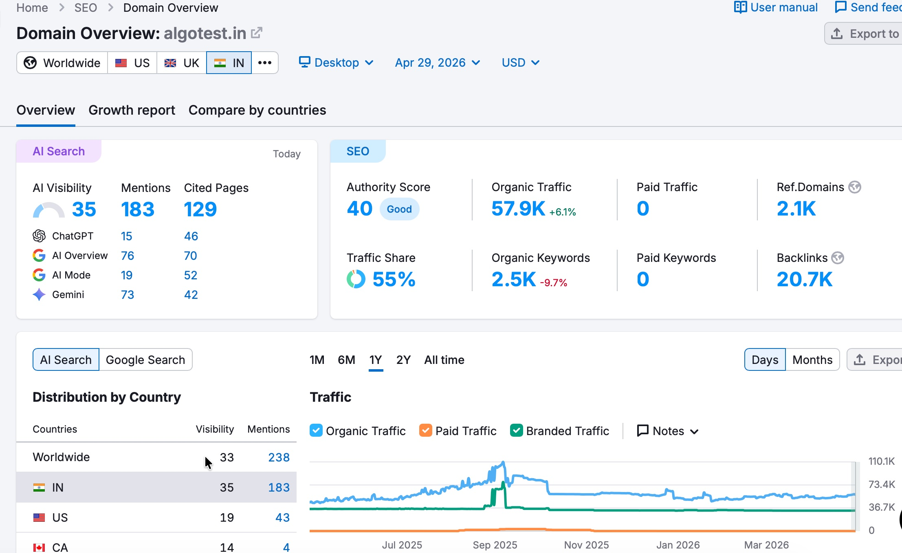
1-year traffic chart shows the peak in Sept 2025 at ~110k/mo organic clicks. Directly tied to my tenure. Authority Score 40, 2.5K organic keywords, 20.7K backlinks.
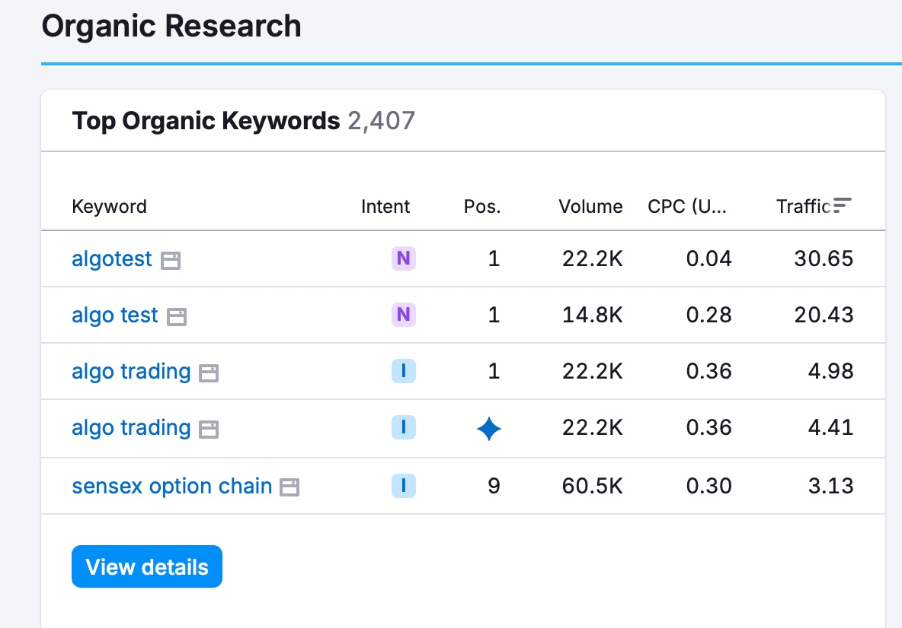
Ranking #1 for "algo trading" (22.2k vol), "algotest" (22.2k vol), and "algo test" (14.8k vol). The three highest-intent brand + category keywords.
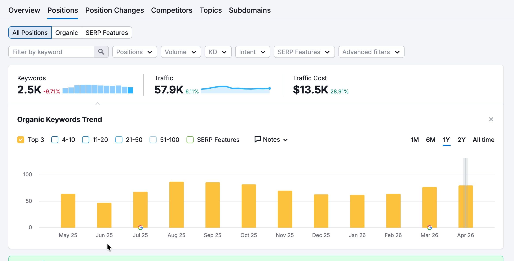
Top-3 keyword count peaked Aug-Oct 2025. Yellow bars correspond to my owned period.
$ ls programmatic-seo/
- /stocks: full PRD, design, content, FE coordination. Owned end-to-end.
- /tools/research-analysts: ranked #2 for "list of registered sebi ra." Converted into a paid service offering for the SEBI-registered RAs the page surfaced.
- /amc (investHQ): same end-to-end scope, including content research.
- /compare-mutual-funds: migrated from AlgoTest to investHQ.
$ ls content-ops/
- Migrated blog from Webflow to Superblog. Removed dev dependency entirely. Anyone with CMS access can now publish.
- Recovered FAQ rankings lost months before joining.
- Wrote/strategized founder LinkedIn content. Flagship: "From 2L loss to managing over 5Cr."
- Owned YouTube (scripts, descriptions, thumbnails), Instagram (carousels, Reels/Shorts), Twitter, founder personal account.
- LinkedIn articles deployed as ranking weapons. Pushed competitors out of brand-keyword SERPs.
Tanya Khanijow
18 months · Content & Social Lead
Client
Travel YouTuber, 2M+ subscribers
Owned
LinkedIn, Twitter, cross-platform repurposing
Built the off-YouTube empire for a creator whose home channel was already dominant. The job was to make her LinkedIn and Twitter presence match the gravity of her main platform.
LinkedIn growth
23k → 63k
~3× over 18 months
Twitter growth
9k → 45k
~5× over 18 months
Peak post likes
29,000
plus multiple 10k+ likes posts
Peak 7-day impressions
9M
up from ~557k baseline
Tweets crossing 1M+ impressions
100+
across the tenure
[evidence] LinkedIn analytics, 90-day windows
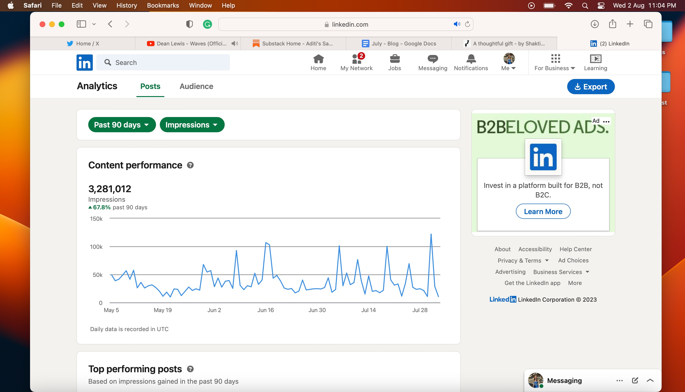
3.28M impressions / 90 days, +67.8%
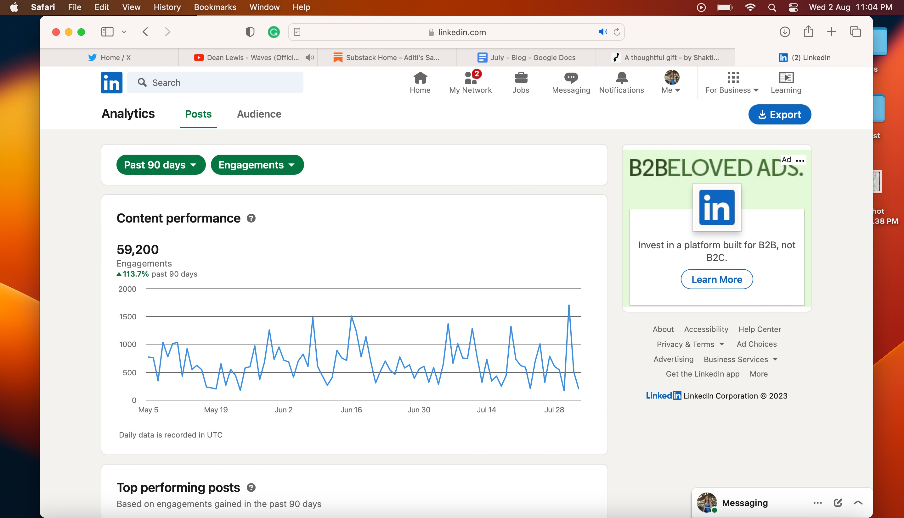
59,200 engagements / 90 days, +113.7%
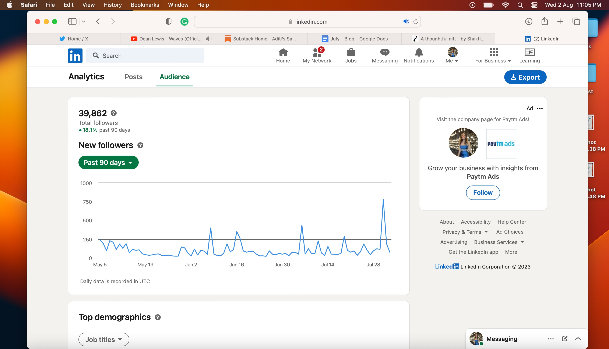
39,862 followers, +18.1% / 90 days
[evidence] Twitter analytics, 7-day windows
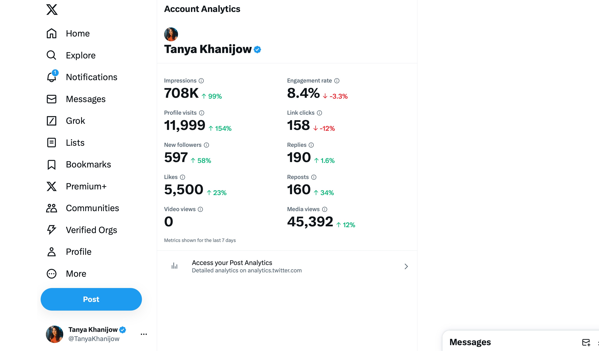
557K impressions / 7 days
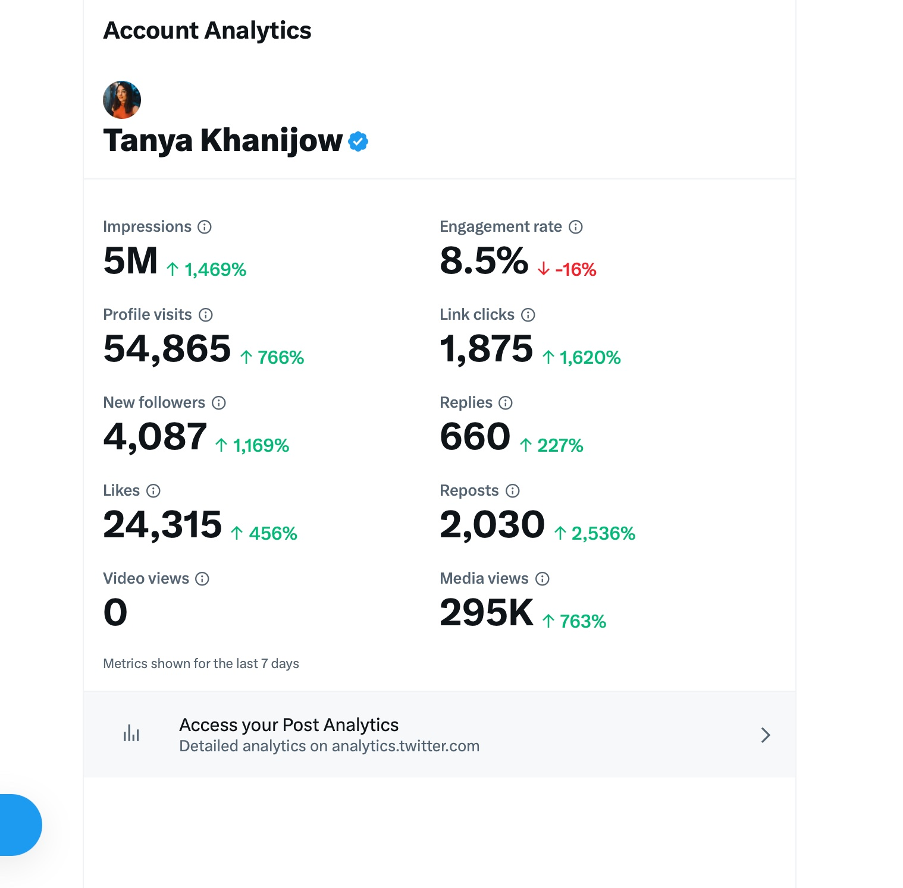
2M impressions / 7 days, +902%
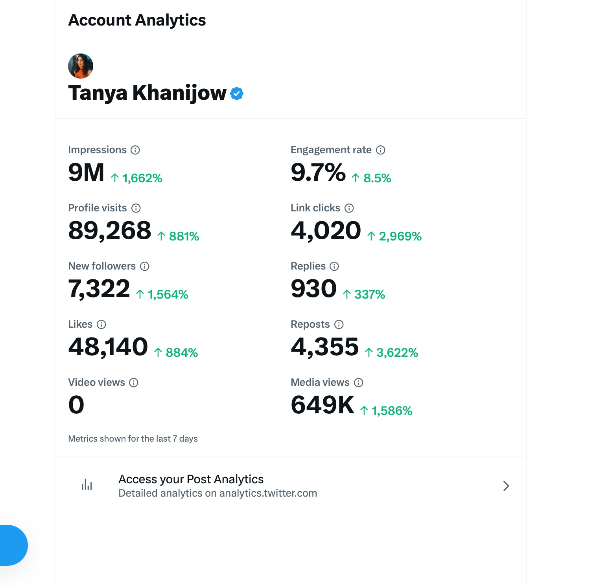
5M impressions, 24,315 likes / 7 days
- Peak 7-day window: 9M impressions (+1,662%), 48,140 likes (+884%), 7,322 new followers (+1,564%), 4,355 reposts (+3,622%).
- Brand deals sourced directly through Twitter and LinkedIn presence.
- Tweet → embassy passport delay resolved. Tweet → airline returned missing baggage. Real-world reach with weight behind it.
- Cross-platform repurposing: IG Reels → Twitter threads, blogs → tweets, LinkedIn → Twitter threads.
- Wrote a 69-tweet researched thread (longest on her profile). Full Spiti Valley itinerary.
Problem
Direct, second-person pain: "tried to take a stunning night sky photo, only to be disappointed." Anyone who's tried it nods immediately.
Numbers
"1 million people, 150k+ likes." Social proof up front. The advice that follows has already worked at scale.
CTA
"Step-by-step guide... with your CAMERA." Specific promise, specific format. CAMERA in caps signals the unlock.
Peerlist
20 months · Marketing
Product
LinkedIn alternative for tech professionals
Owned
Twitter, blog, ad copy, campaigns
Twenty months of strategic content for a startup positioned directly against an incumbent. Every post had documented rationale: target audience, timing, format, expected behavior. Treated content as a system, not a feed.
Top single-post impressions
46k+
image-format relatable post
Job posting tweet
34k impr.
50+ followers in one post
#LinkedOut campaign
10 days
community-adopted hashtag
DEV Community ad variants
6+
devs/designers/PMs, 2+ YOE
[evidence] DEV Community ad copy: sampled variants
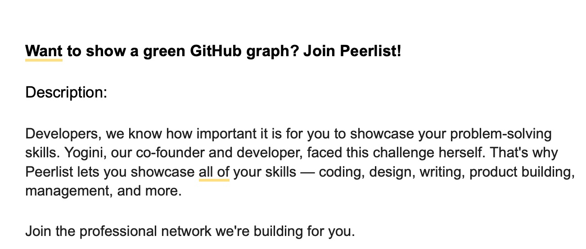
Hook tied to a developer's most visible vanity metric, the green graph.
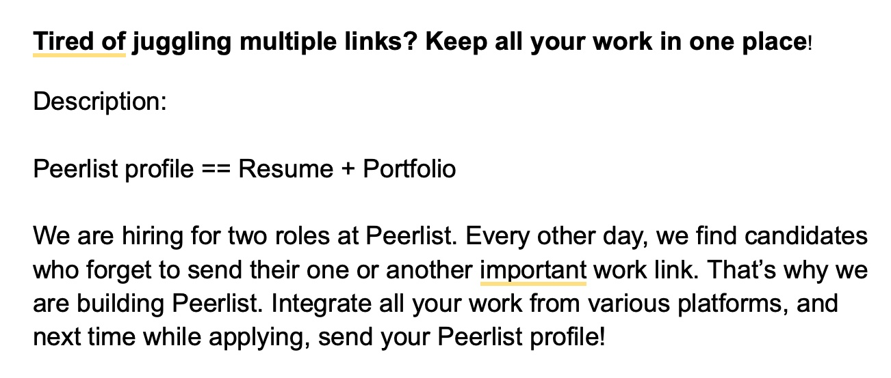
Problem-first framing. "Profile == Resume + Portfolio" as the equation.
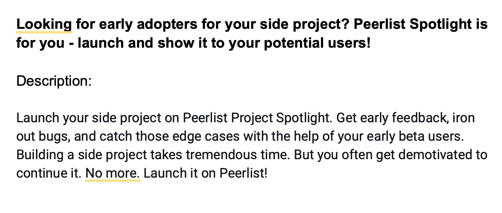
Speaks to the fear: showing too much vs. showing right.
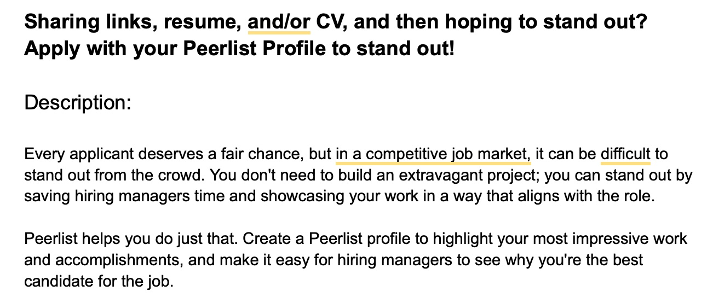
Targets the "launching but no users" pain. Specific to Peerlist Spotlight.
- Owned blog.peerlist.io entirely.
- Ran multi-day campaigns: 10-day salary series, #LinkedOut anti-LinkedIn campaign (community adopted the hashtag), quote-tweet problem campaigns.
- Ran the influencer campaign end to end. Identified creators, drafted briefs, negotiated deliverables, tracked performance.
- Wrote ad copy for DEV Community campaign. Multiple sharp variants, all targeting devs/designers/PMs.
- Documented giveaway failures honestly: TG of acquisition approach must align with TG of the prize.
Chosen
2 months · Content Marketing (Freelance)
Brand
Dermatologist-led skincare
Scope
YouTube full-stack, Reddit, community
Two months. A repurposing strategy applied with discipline: take what already worked on Instagram, port it to YouTube Shorts, post daily. Two videos broke 250k+ views. Reddit AMA broke into Western markets, rare for an India-based brand.
Top Short (Bemotrizinol)
495k views
FDA proposal explainer
2nd Short (Ingrown Nails)
268k views
educational format
Subscriber growth
9.9k → 10.8k
+900 subs, Shorts-only
Reddit AMA reach
15k views
55.7% US / 9.6% CA / 5.9% UK
[evidence] YouTube Shorts performance
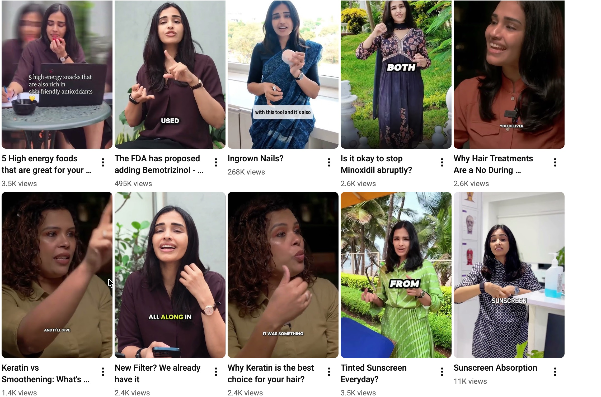
Top performers: 495K (Bemotrizinol/FDA), 268K (Ingrown Nails), 11K (Sunscreen Absorption). Strategy: repurpose founder's Instagram → YT Shorts daily.
[evidence] Reddit AMA, Western market breakthrough
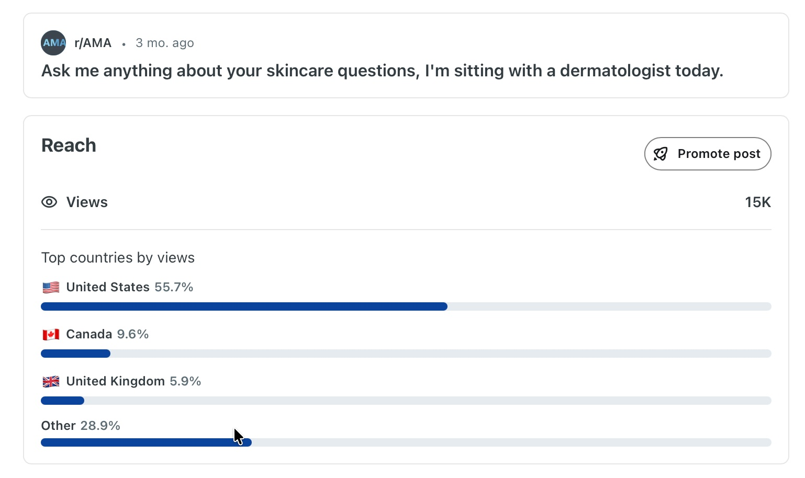
15K views on r/AMA, with 55.7% US / 9.6% Canada / 5.9% UK distribution. Rare for an India-based skincare brand to break into Western audiences.
- Pre-production, post-production, posting, descriptions, Shorts editing, clipping. Full-stack YouTube ownership.
- Strategy: founder's IG videos → YT Shorts daily. Identified what was already proven and ported it.
- Reddit AMA on r/AMA. Broke into US/Canada/UK audiences for a brand operating from India.
- Community management across platforms.